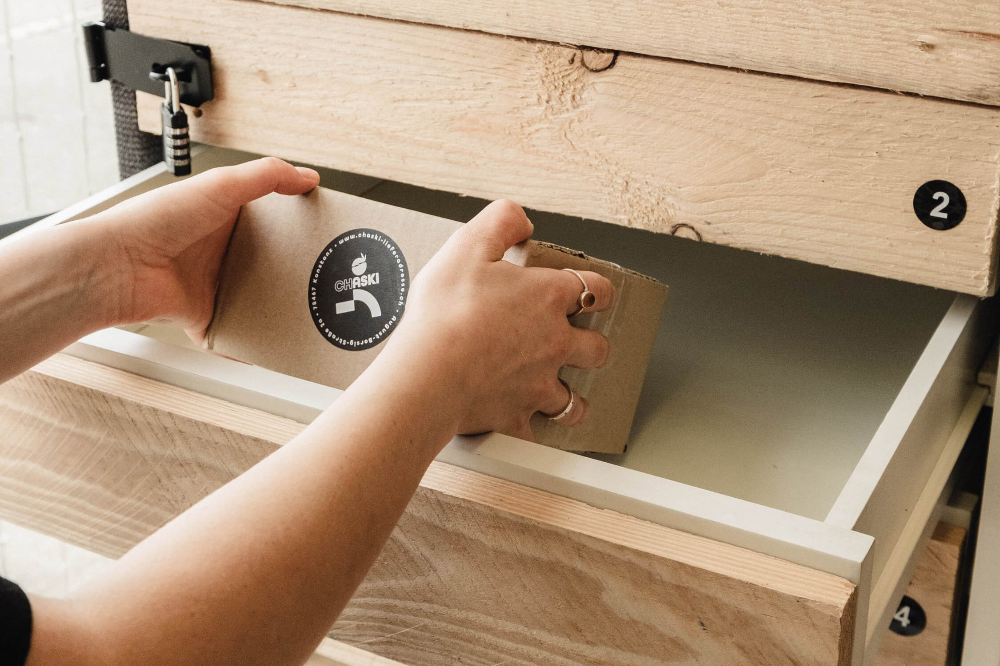
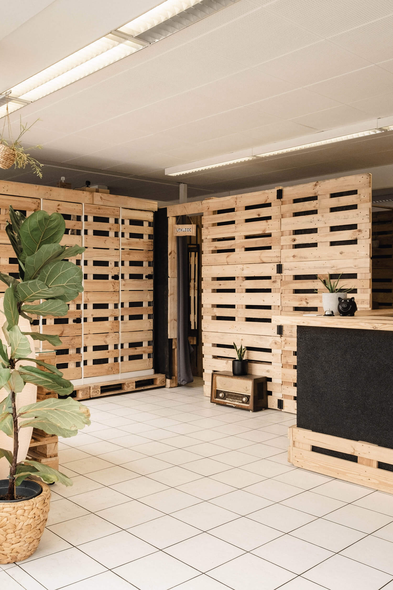

Standort in Konstanz
Du holst deine Sendung grenznah in Deutschland ab.
Du wohnst in der Schweiz und möchtest bei einem deutschen Online-Shop bestellen? Mit CHASKI nutzt du eine Lieferadresse in Deutschland und holst deine Sendungen bei uns in Konstanz ab.
So kannst du Bestellungen aus Shops empfangen, die nicht direkt in die Schweiz liefern oder für Schweizer Kunden andere Versandbedingungen haben.

Du holst deine Sendung grenznah in Deutschland ab.
Für normale Sendungen ab Erhalt unserer Eingangsbestätigung.
Rund um die Uhr für registrierte Kunden nach Freischaltung.
Annahme nach vorheriger Absprache.
Eine deutsche Lieferadresse kann dir helfen, wenn ein Händler nur innerhalb Deutschlands oder der EU versendet. Du lässt deine Bestellung an unsere Adresse in Konstanz liefern und holst sie anschließend selbst ab. Wenn mehrere Sendungen bei uns eintreffen, kannst du sie innerhalb ihrer jeweiligen Lagerfrist abholen.
Ob sich eine Bestellung lohnt, hängt von den Versandkosten des Shops, unseren Annahmegebühren und den für dich geltenden Einfuhrbestimmungen ab. Vergleiche die Kosten vor dem Kauf und informiere dich über mögliche Abgaben bei der Einfuhr in die Schweiz.
CHASKI ist eine Annahme- und Abholstelle in Konstanz nahe der Schweizer Grenze. Wir nehmen korrekt adressierte Sendungen für registrierte Kunden entgegen und informieren dich, sobald deine Lieferung bei uns eingetroffen ist.
Du holst deine Sendung grenznah in Deutschland ab.
Für normale Sendungen gilt die kostenlose Frist ab Erhalt unserer Eingangsbestätigung.
Annahme nach vorheriger Absprache; 14 Tage kostenlose Lagerung ab Eingangsbestätigung.
Die Abholung rund um die Uhr steht registrierten Kunden nach Freischaltung zur Verfügung.
Für registrierte Kunden ist der Versand bereits vorfrankierter Pakete ab CHASKI kostenlos. Die Sendung muss bereits frankiert sein; wir übernehmen keine Frankierung.


IN VIER SCHRITTEN
Die genaue Anleitung mit Adressformat und Hinweisen zur Bestellung findest du auf der Ablaufseite.
Registriere dich kostenlos bei CHASKI.
Verwende beim Einkauf deine CHASKI-Lieferadresse und Kundennummer.
Wir benachrichtigen dich, sobald deine Sendung eingetroffen ist.
Hole deine Sendung innerhalb der geltenden Lagerfrist in Konstanz ab.
Unser Angebot richtet sich besonders an Privatkunden mit Wohnsitz in der Schweiz, die Bestellungen bei deutschen oder europäischen Händlern empfangen möchten. Eine Paketadresse in Deutschland kann passen, wenn der Shop nicht in die Schweiz liefert, der Versand an eine deutsche Adresse günstiger ist oder du deine Bestellung nahe der Grenze selbst abholen möchtest.
Die Lieferadresse ändert nichts an den Einfuhrregeln. Informiere dich vor der Bestellung über die für deine Ware geltenden Schweizer Zoll- und Steuerbestimmungen. Für konkrete Fragen zur Einfuhrsteuer findest du weitere Informationen in unserem Ratgeber zur Einfuhrsteuer in der Schweiz.
Ja. Du kannst dich bei CHASKI registrieren und unsere Adresse in Konstanz als Lieferadresse verwenden. Für eine eindeutige Zuordnung müssen dein Name und deine persönliche Kundennummer korrekt in der Lieferanschrift stehen. Die vollständige Anleitung findest du auf unserer Ablaufseite.
Die Annahmegebühr richtet sich nach Größe und Art der Sendung. Normale Sendungen lagern ab Erhalt der Eingangsbestätigung 30 Tage kostenlos; für Sperrgut und Paletten gilt eine kostenlose Lagerfrist von 14 Tagen. Danach gelten die Gebühren der Preisliste. Prüfe dort vor der Bestellung die aktuellen Beträge.
Normale Sendungen lagern 30 Tage kostenlos. Für Sperrgut und Paletten sind es 14 Tage. Die Frist beginnt jeweils mit Erhalt der Eingangsbestätigung. Nach Ablauf fallen die Gebühren gemäß Preisliste an.
Die regulären Öffnungszeiten und den Standort findest du im Kontaktbereich. Click & Collect rund um die Uhr ist für registrierte Kunden nach Freischaltung möglich.
Wir versenden vorfrankierte Pakete für registrierte Kunden kostenlos ab CHASKI. Das Paket muss bereits mit einem gültigen Versandlabel frankiert sein. Eine Frankierung durch uns ist nicht enthalten.
Mit deinem CHASKI-Konto erhältst du deine persönliche Lieferadresse und Kundennummer.
Jetzt kostenlos registrieren
August-Borsig-Str. 2a
78467 Konstanz
Industriegebiet Stromeyersdorf
Kostenlose Parkplätze vor der Tür
Hilfe bei Ausfuhrbelegen, Zollabstempelung und Paketabholungen:
+49 (0) 7531 991 38 20